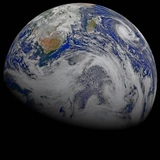

Planetary Fact Sheet
| Earth | Mars | Saturn | Venus | |
|---|---|---|---|---|
| Planets |  |  |
||
| Diameter (miles) | 7,926 | 4,221 | 74,897 | 7,521 |
| Gravity (ft/s^2)2 | 32.1 | 12.1 | 29.4 | 29.1 |
| Escape Velocity (miles/s) | 7 | 3.1 | 22.1 | 6.4 |
| Length of Day (hours) | 24 | 24.7 | 10.7 | 2,802 |
| Distance from Sun (10^6 miles) | 93 | 141.6 | 890.8 | 67.2 |
| Orbital Period (days) | 365.2 | 687 | 10,747 | 224.7 |
| Orbital Velocity (miles/s) | 18.5 | 15 | 6 | 21.8 |